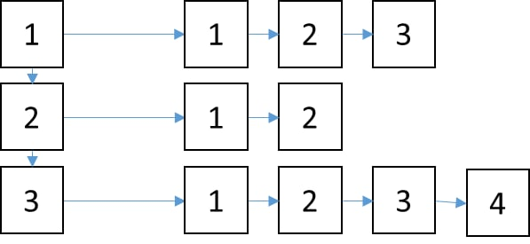

صف اولویت دار!
پی دی اف سوال در تمرین آپلود شده است.
پی دی اف سوال در تمرین آپلود شده است.
سپهر ک مدتی ست مسیر خود را گم کرده است به پیشنهاد دوستش، به نزد فردی رفته تا به کمک او بتواند مسیر خوب از بد را تشخیص داده فرد به سپهر پیشنهاد داد در انتخاب مسیردرست بین دوراهی ها و رسیدن به چیزی که میخواهد از ساختاری شبیه درخت دودویی استفاده کند :) به طوریکه وقتی از نقطه ای شروع میکند نقطه با انرژی کمتر(بد) را در یک سمت و نقطه با انرژی بیشتر(خوب) را در سمت دیگر قرار دهد تا وقتی میخواهد به یک نقطه انرژی خاص الهی برسد بتواند سریع صراط مستقیم را پیدا کندLol به سپهر کمک کنید تا این کلاس را طراحی کند.
هدف : پیاده سازی یک کلاس درخت دودویی همراه با استفاده از لیست پیوندی لینک توضیح درخت دودویی
توابع مورد نیاز:
نکته ۱: حتما این تابع بصورت بازگشتی طراحی شود. نکته ۲: حتما کد خود را بصورت چند فایل مجزا بنویسید. قسمت امتیازی:
یک کلاس به نام List برای ذخیره سازی تعداد نامحدود داده که از هر نوعی میتوانند باشند ایجاد کنید.
این کلاس علاوه بر متد های مورد نیاز باید شامل متدهای زیر نیز باشد:
remove که یک مقدار را از آخر لیست حذف کند.insert که یک مقدار را به آخر لیست اضافه میکند.[ ] که با استفاده از آن بتوان به عناصر لیست دست پیدا کرد و مقدار آن را تغییر داد.در این قسمت میخواهیم با استفاده از کلاس List در قسمت قبل کلاسی به نام List2D طراحی کنیم که با استفاده از آن بتوانیم لیست های دو بعدی ایجاد و آنها را مدیریت کنیم.
این کلاس علاوه بر متد های مورد نیاز شامل متدهای زیر است:
insert که بعنوان ورودی یک لیست میگیرد و آن را به آخر اضافه کند.insert که یک داده از همان جنس List میگیرد و یک لیست به آخرین لیست ها اضافه میکند که در آن تنها این عضو وجود دارد. (برای مثال در صورتی که تمامی مقادیر از نوع int باشند، insert(3) یک لیست به آخر لیست ها اضافه میشود که تنها شامل عدد ۳ است.( ) که یک int به عنوان ورودی میگیرد و لیست متناظر با index این عدد را برمیگرداند.() به صورت (ستون، ردیف) برای نشان دادن داده موجود در آن خانه و امکان ویرایش داشته باشد.<< می توانیم عناصر لیست را در خروجی استاندارد چاپ کنیم. به طوریکه
عناصر هر لیست در یک خط چاپ شوند.= که شیئ اول را در شیئ دوم بریزد. (توجه کنید این دو شیئ حافظه های هم مستقل داشته باشند.)شکل زیر یک نمایشی از لیست ها در کلاس List2D است:

برای مثال اگر شکل بالا محتوای ابجکت lst را نشان میدهد. lst(1) باید لیست اول را برگرداند و همچنین lst(1,2) باید مقدار عنصر دوم از لیست شماره ۱ را برگرداند.
موارد مهم: